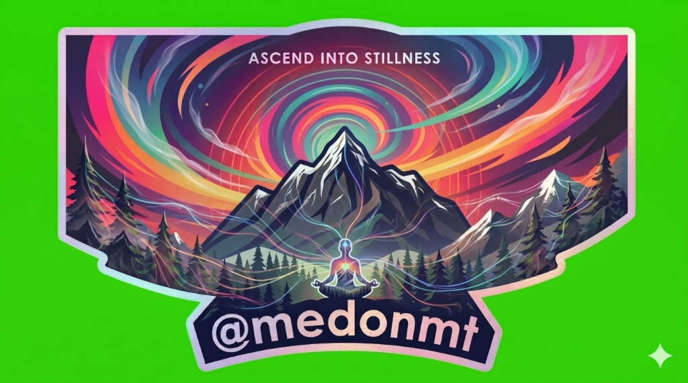

Starting in Spring 2028, Aadesh Neupane will walk the full Nepal High Route alone under MedOnMt (Meditate On Mountain)—1,700 kilometers offered as pilgrimage so a permanent place of practice can be built. Endurance and presence at 6,000 meters serve that aim.
Founded by high-altitude athlete and researcher Aadesh Neupane on the conviction that high-altitude mountains are natural temples of awakening, MedOnMt brings together rigorous backcountry endurance with the ancient discipline of mindfulness.
On the Great Himalayan Trail, every morning begins with seated breathwork before dawn. Every pass approach becomes a sustained practice of walking meditation (*Kora*). Hypoxia, freezing temperatures, and relentless fatigue are not enemies to conquer, but teachers of radical presence and acceptance.
Experiencing the vast Himalayan silence where external chatter dissolves into spacious awareness.
Moving with reverence through holy valleys blessed by centuries of Buddhist and Bon yogis.
Walking in partnership with local Nepali guides and porters, honoring fair wages and mountain heritage.

Before entering the Himalayas for the 1,700 km High Route in 2028, Aadesh Neupane is executing five defining American alpine and big-wall benchmarks in 2027. This builds directly upon Aadesh's proven high-altitude thru-hiking portfolio—having completed the Manaslu Circuit (5,106m), Tilicho Lake via Mesokanta Pass (5,121m), Upper Mustang Circuit, Gosaikunda Circuit (4,610m), and the remote Wind River Range Continental Divide Thru-Hike.
A continuous single-day push ascending steep alpine snow ramps and freezing volcanic ridges. Stress-tests extreme cold physiology, crampon endurance, and 4-season alpine shelter gear under gale-force Cascade winds.
The most heavily glaciated peak in the contiguous US (26 major glaciers). Traversing crevassed labyrinth terrain and high-angle serac slopes directly mirrors the technical glacier navigation required on the GHT's Three Cols.
Notoriously the most hazardous and remote lower-48 state highpoint alongside Gannett Peak. Having already soloed Gannett Peak in Wyoming, Aadesh completes the twin pinnacle alpine solos of the Northern Rockies with complete wilderness self-reliance.
One of the longest and most revered multi-pitch water ice climbs in the United States. Climbing 10 consecutive frozen waterfall pitches develops the psychological composure, sustained calf burn, and ice protection fluency needed for Himalayan ice headwalls.
A massive, proud modern big-wall line up the East face of South Norwegian Buttress near Lake Serene. Requires continuous technical focus across 23 pitches with 14 pitches at 5.10 or harder—directly pairing with Aadesh’s ascent of the 23-pitch Squawstruck (Kyhv Peak 7735) in Utah.
Expedition Partners cover expedition costs. Donor gifts go to the meditation sanctuary. We are not accepting gifts online yet—write to aadesh@medonmt.org if you’d like to be among the first patrons.
Leading a self-supported expedition across 1,700km of remote high-altitude Himalayan terrain demands rigorous clinical wilderness emergency readiness and formal mindfulness instruction mastery.
Attaining dual Wilderness First Aid (WFA) and gold-standard Wilderness First Responder (WFR) certification. Covers advanced remote trauma management, prolonged field care, high-altitude pathology (AMS, HAPE, HACE), hypothermia resuscitation, and backcountry evacuation logistics across isolated zones with zero helicopter access.
Official MBSR Teacher / Trainer Certification founded on Jon Kabat-Zinn’s clinically validated protocol. Directly anchors MedOnMt’s high-altitude contemplative methodology—combining evidence-based stress reduction, neuro-cognitive regulation under hypoxic strain, and secular mindfulness for retreat participants and expedition athletes.
140 Days · From late March thaw to mid-August high alpine summer
Kanchenjunga Base Camp to Makalu Barun. Traversing dense rhododendron forests in bloom into glaciated terrain over Lumbha Sambha Pass. Acclimatization and initial rhythm of daily silence.
The mountaineering core: Sherpani Col (6,150m), West Col (6,190m), and Amphu Labsta (5,845m). Fixed ropes, crevasses, and deep psychological presence in the Barun and Hongu valleys.
Rolwaling, Tashi Laptsa (5,755m), Langtang, and Tilman Pass (5,308m). Sitting meditation near holy Gosainkunda Lake, meditating on the impermanence of stone and water.
Manaslu, Larkya La (5,106m), hidden Naar-Phu, and the uninhabited 6-day wilderness crossing over Teri La (5,595m) into the walled kingdom of Lo Manthang.
Upper Dolpo, Crystal Mountain, Shey Gompa, Phoksundo Lake, Rara Lake, and the final border frontier of Humla at Hilsa. Completion of the full 1,700km mindful traverse.
Satellite safety check-ins and field dispatches for those walking with the pilgrimage from afar—standing with Himalayan pioneers and contemporary peer thru-hikers.
During the 140-day continuous push, MedOnMt will share enough for loved ones and patrons to follow safely—without turning the pilgrimage into a public spectacle:
Acknowledging contemporary peers and the dedicated community advancing human-powered Himalayan crossings:
Completed a continuous high-route traverse (April–August 2025; ~125 days) from Kanchenjunga to Hilsa, showcasing exemplary inReach satellite dispatches, Strava tracking, and Hyperlite Dyneema setups.
Led by Sudeep Kandel, HAL is running the staged Great Himalayan Series across 2026–2028. Notably, HAL's Spring 2028 Teri La & Dolpo stages directly overlap chronologically with MedOnMt's continuous High Route push!
Curated by HAL and Robin Boustead, recording all 133 verified human-powered border-to-border crossings across Nepal.